2127C hydraulic gear selection system
- Path
- Descriptions > 21 GEARBOX > 2127 ELECTRO-HYDRAULIC SELECTION. GEARBOX EXTERNAL. CONTROLS > 2127C hydraulic gear selection system
- Kind
- system description
- Applies to
- engines: 2.0 TS, 3.2 V6; all production periods
- Interactive page
- https://sloeber94.github.io/elrnDB-a147/en/#/3022470
Applies to: engines: 2.0 TS; all production periods; only with equipment: Cambio robotizzato
CONSTRUCTION FEATURES
HYDRAULIC GEAR SELECTION SYSTEM
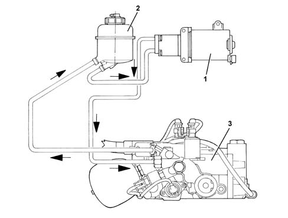
1 - Electric pump 2 - Reservoir 3 - Electro-hydraulic unit
OPERATION
When the driver's door is opened, the Selespeed control unit receives an earth signal (dedicated line) and consequently operates the hydraulic system electric pump until a pressure of 30 bar is reached.
Whilst the engine is warming up, the pressure in the hydraulic circuit increases up to 60 bar and when the engine reaches operating temperature and the vehicle is moving the pressure stablizes at betwen 42 and 54 bar.
Electric pump
This gear pump is coupled to a commutator-type electric motor.
The pump is supported by a special bracket with vibration dampers and is connected to the electro-hydraulic unit by means of a high pressure pipe.
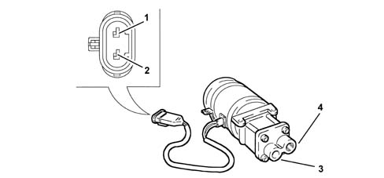
1 - Earth 2 - Supply 3 - Supply 4 - Return
SPECIFICATIONS
- Rated output: 0.7 l/min
- Operating pressure: between 40 and 55 bar
Reservoir
The reservoir containing the fluid necessary for the operation of the electro-hydraulic unit is located on the hydraulic pump mounting bracket.
The connection to the system is via two pipes; one supply pipe, connected to the pump and a return pipe connected to the hydraulic unit outlet connector.
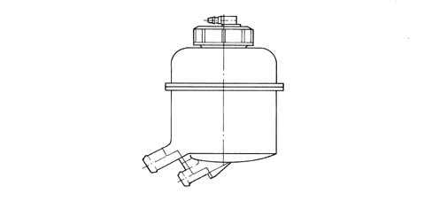
The fluid reservoir cover has:
- a breather connector on the upper part
- a special dipstick inside for checking the level of the fluid in the hydraulic system (which should be between the MIX/MAX levels when cold).
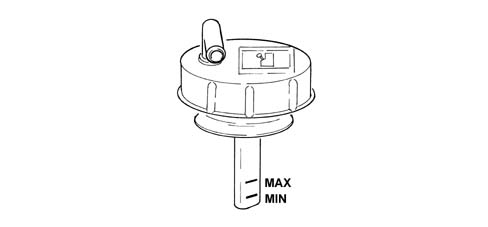
Maintenance
The Selespeed system fluid level should be checked with the vehicle on a flat surface and the engine switched off and cold.
To check the level, proceed as follows:
- turn the ignition key to the ON position
- detach the breather pipe and remove the cap, checking that the level is at the MAX reference on the dipstick on the actual cap.
- if the level is below the MAX mark, add fluid until the level is correct.
- after having retightened the cap, fit the breather pipe on the cap and turn the ignition OFF.
Hydraulic unit
Its functions are:
- to operate the clutch control lever;
- to operate the gear control shaft (selection and engagement manoeuvres;
- maintain a reserve of energy/hydraulic power for efficient actuator operation.
The hydraulic unit consists of:
- a cast body (1) fastened directly to the gearbox;
- a single-acting actuator (2) for operating the clutch lever;
- two proportional pressure valves EV1 (3) and EV2 (4) controlling the engagement actuator;
- two on-off solenoids EV3 (5) and EV4 (6)
- proportional flow solenoid EV0 (7) for controlling the clutch actuator;
- hydraulic gas accumulator (8);
- pressure sensor (9);
- sensor (10) for detecting clutch actuator position;
- sensor (11) for detecting engagement actuator position;
- sensor (12) for detecting selection actuator position;
- bleed valve (13).
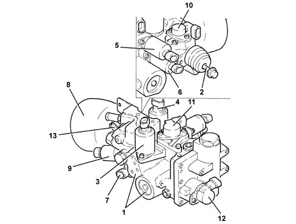
The diagram below illustrates the internal mechanisms for:
- gear selection and engagement controls;
- clutch control;
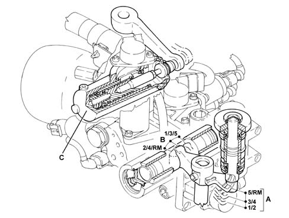
A - Gear selection B - Gear engagement C - Clutch engagement/release
HYDRAULIC DIAGRAM
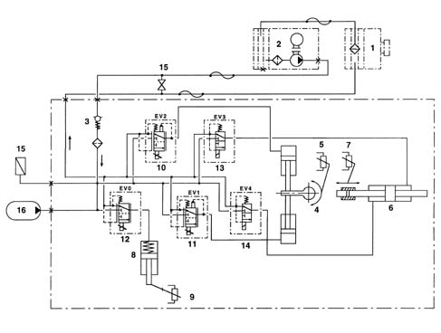
1 - Reservoir 2 - Electric pump 3 - Single-acting valve 4 - Engagement/release actuator (with three mechanically-defined positions) 5 - Engagement actuator position potentiometer 6 - Selection actuator (with two fixed positions, the third selection position is defined by the inner gearbox springs) 7 - Selection actuator position potentiometer 8 - Clutch actuator (single-acting) 9 - Clutch actuator position potentiometer 10 - Proportional pressure solenoid EV2 controlling the engagement actuator 11 - Proportional pressure solenoid EV1 controlling engagement actuator 12 - Proportional flow solenoid EV0 controlling clutch actuator 13 - On-off solenoid EV3 controlling selection actuator 14 - On-off solenoid EV4 controlling selection actuator 15 - Pressure sensor 16 - Hydraulic gas accumulator
Applies to: engines: 3.2 V6; all production periods; only with equipment: Cambio robotizzato
COMPONENT DESCRIPTION
ELECTRIC PUMP
This gear pump is coupled to a commutator-type electric motor.
The electric pump is supported by a bracket with vibration-proof fittings.
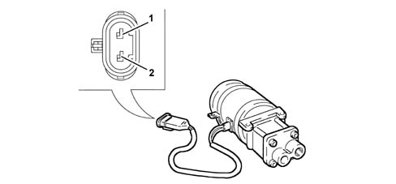
1. Earth 2. Fuel system
IMPLEMENTATION HYDRAULIC UNIT
This contains all the proportional solenoid valves and the system hydraulic accumulator.
1. Hydraulic accumulator 2. Even speed engagement solenoid 3. Odd speed engagement solenoid 4. Clutch engagement/release solenoid 5. Brake solenoid (speed selection) 6. Oil pressure sensor
ELECTROHYDRAULIC SELECTION DEVICE
Replaces a conventional gearbox control and allows the gearbox linkages to be operated to change gear.
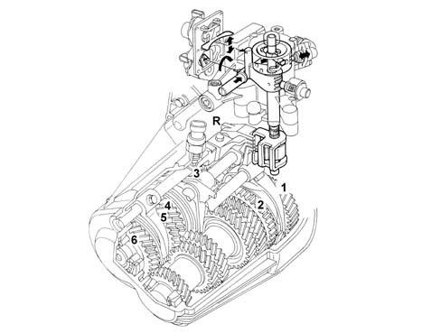
CLUTCH CONTROL ACTUATOR
Essentially the same as a slave cylinder on a conventional hydraulic clutch system.
Clutch position sensor (2) and system bleed valve (3) is fitted to clutch control atuator (1).
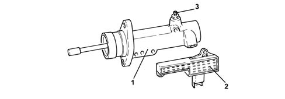
RESERVOIR
The reservoir containing the fluid necessary for the operation of the electro-hydraulic unit is located on the hydraulic pump mounting bracket.
The oil reservoir cover is equipped with:
- an upper breather fitting on the upper part,
- a rod used to check the level of fluid in the hydraulic system.
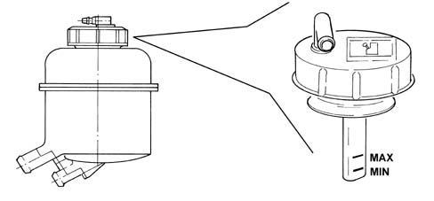